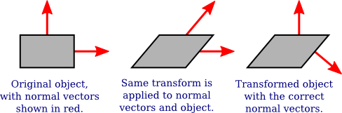
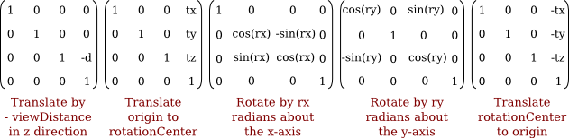

We have already seen in Chapter 6 how to draw primitives using WebGL, and how to implement 2D transformations. Drawing primitives is the same in 3D, except that there are three coordinates per vertex instead of two. Transformations in 3D are also similar to 2D, but for transformations the increase in complexity that comes with the third dimension is substantial. This section covers the geometric side of 3D graphics with WebGL. In the next section, we will move on to the question of lighting and materials.
But before we begin working more seriously with WebGL, it will be nice to have a better way to include shader source code on a web page. Up until now, I have created the source code strings by concatenating a bunch of JavaScript string literals, one for each line of code. That format is hard to read and very hard to edit. There are at least two other techniques that are often used. One is to put the GLSL shader source code inside <script> elements. Here is an example for a vertex shader:
<script type="x-shader/x-vertex" id="vshader">
attribute vec3 a_coords;
uniform mat4 modelviewProjection;
void main() {
vec4 coords = vec4(a_coords,1.0);
gl_Position = modelviewProjection * coords;
}
</script>
This relies on the fact that a web browser will not recognize the type listed in the <script> element, so it will not try to execute the script. However, it does store the content of the <script> element in the DOM data structure that represents the web page. The content can be retrieved as a string using the standard DOM API. I won't explain the API functions that are used, but here is a function that takes the id of the script element as its parameter and returns a string containing the text from inside the element:
function getTextContent( elementID ) {
let element = document.getElementById(elementID);
let node = element.firstChild;
let str = "";
while (node) {
if (node.nodeType == 3) // this is a text node
str += node.textContent;
node = node.nextSibling;
}
return str;
}
The sample program webgl/glmatrix-cube-unlit.html uses this technique. The other idea is to define the source code as a JavaScript template string. (See Subsection A.3.1). A template string is enclosed between single backquote characters and can span multiple lines. (The "backquote" is also called a "backtick.") Template strings were only introduced into JavaScript as part of ES6. They can include the values of JavaScript expressions, but we don't need that capability here. Here is how the above shader could be defined as a template string:
const vertexShaderSource = `
attribute vec3 a_coords;
uniform mat4 modelviewProjection;
void main() {
vec4 coords = vec4(a_coords,1.0);
gl_Position = modelviewProjection * coords;
}`;
This technique is used in many of the sample programs in this chapter. Note that if you define a GLSL ES 3.00 shader as a template string, you should be sure to include the required first line, #version 3.00 es, immediately after the opening backquote, since that line cannot be preceded by a blank line.
Transformations are essential to computer graphics. The WebGL API does not provide any functions for working with transformations. In Section 6.5, we used a simple JavaScript class to represent modeling transformations in 2D. Things get more complex in three dimensions. For 3D graphics with WebGL, the JavaScript side will usually have to create both a modelview transform and a projection transform, and it will have to apply rotation, scaling, and translation to the modelview matrix, all without help from WebGL. Doing so is much easier if you have a JavaScript library to do the work. One commonly used library is glMatrix, a free JavaScript library for vector and matrix math written by Brandon Jones and Colin MacKenzie IV. It is available from https://glmatrix.net. This textbook uses Version 2.3 of the library, from 2015, although newer versions are available. According to its license, this file can be freely used and distributed. My programs use the script gl-matrix-min.js. You can find a copy in the source folder in the web site download of this book. This file is a "minified" JavaScript file, which is not meant to be human-readable. (You can also read the full source for version 2.2, in human-readable form including comments, in the file webgl/gl-matrix.js, and more information can be found on the glmatrix web site.)
The glMatrix API can be made available for use on a web page with a script element such as
<script src="gl-matrix-min.js"></script>
This assumes that gl-matrix-min.js is in the same directory as the web page.
The glMatrix library defines what it calls "classes" named vec2, vec3, and vec4 for working with vectors of 2, 3, and 4 numbers. It defines mat3 for working with 3-by-3 matrices and mat4 for 4-by-4 matrices. The names should not be confused with the GLSL types of the same names; glMatrix in entirely on the JavaScript side. However, a glMatrix mat4 can be passed to a shader program to specify the value of a GLSL mat4, and similarly for the other vector and matrix types.
Each glMatrix class defines a set of functions for working with vectors and matrices. In fact, however, although the documentation uses the term "class," glMatrix is not object-oriented. Its classes are really just JavaScript objects, and the functions in its classes are what would be called static methods in Java. Vectors and matrices are represented in glMatrix as arrays, and the functions in classes like vec4 and mat4 simply operate on those arrays. There are no objects of type vec4 or mat4 as such, just arrays of length 4 or 16 respectively. The arrays can be either ordinary JavaScript arrays or typed arrays of type Float32Array. If you let glMatrix create the arrays for you, they will be Float32Arrays, but all glMatrix functions will work with either kind of array. For example, if the glMatrix documentation says that a parameter should be of type vec3, it is OK to pass either a Float32Array or a regular JavaScript array of three numbers as the value of that parameter.
Note that it is also the case that either kind of array can be used in WebGL functions such as gl.uniform3fv() and gl.uniformMatrix4fv(). glMatrix is designed to work with those functions. For example, a mat4 in glMatrix is an array of length 16 that holds the elements of a 4-by-4 array in column-major order, the same format that is used by gl.uniformMatrix4fv.
Each glMatrix class has a create() function which creates an array of the appropriate length and fills it with default values. For example,
transform = mat4.create();
sets transform to be a new Float32Array of length 16, initialized to represent the identity matrix. Similarly,
vector = vec3.create();
creates a Float32Array of length 3, filled with zeros. Each class also has a function clone(x) that creates a copy of its parameter x. For example:
saveTransform = mat4.clone(modelview);
Most other functions do not create new arrays. Instead, they modify the contents of their first parameter. For example, mat4.multiply(A,B,C) will modify A so that it holds the matrix product of B and C. Each parameter must be a mat4 (that is, an array of length 16) that already exists. It is OK for some of the arrays to be the same. For example, mat4.multiply(A,A,B) has the effect of multiplying A times B and modifying A so that it contains the answer.
There are functions for multiplying a matrix by standard transformations such as scaling and rotation. For example if A and B are mat4s and v is a vec3, then mat4.translate(A,B,v) makes A equal to the product of B and the matrix that represents translation by the vector v. In practice, we will use such operations mostly on a matrix that represents the modelview transformation. So, suppose that we have a mat4 named modelview that holds the current modelview transform. To apply a translation by a vector [dx,dy,dz], we can say
mat4.translate( modelview, modelview, [dx,dy,dz] );
This is equivalent to calling glTranslatef(dx,dy,dz) in OpenGL. That is, if we draw some geometry after this statement, using modelview as the modelview transformation, then the geometry will first be translated by [dx,dy,dz] and then will be transformed by whatever was the previous value of modelview. Note the use of a vector to specify the translation in this command, rather than three separate parameters; this is typical of glMatrix. To apply a scaling transformation with scale factors sx, sy, and sz, use
mat4.scale( modelview, modelview, [sx,sy,sz] );
For rotation, glMatrix has four functions, including three for the common cases of rotation about the x, y, or z axis. The fourth rotation function specifies the axis of rotation as the line from (0,0,0) to a point (dx,dy,dz). This is equivalent to glRotatef(angle,dx,dy,dz) Unfortunately, the angle of rotation in these functions is specified in radians rather than in degrees:
mat4.rotateX( modelview, modelview, radians ); mat4.rotateY( modelview, modelview, radians ); mat4.rotateZ( modelview, modelview, radians ); mat4.rotate( modelview, modelview, radians, [dx,dy,dz] );
These functions allow us to do all the basic modeling and viewing transformations that we need for 3D graphics. To do hierarchical graphics, we also need to save and restore the transformation as we traverse the scene graph. For that, we need a stack. We can use a regular JavaScript array, which already has push and pop operations. So, we can create the stack as an empty array:
const matrixStack = [];
We can then push a copy of the current modelview matrix onto the stack by saying
matrixStack.push( mat4.clone(modelview) );
and we can remove a matrix from the stack and set it to be the current modelview matrix with
modelview = matrixStack.pop();
These operations are equivalent to glPushMatrix() and glPopMatrix() in OpenGL.
The starting point for the modelview transform is usually a viewing transform. In OpenGL, the function gluLookAt is often used to set up the viewing transformation (Subsection 3.3.4). The glMatrix library has a "lookAt" function to do the same thing:
mat4.lookAt( modelview, [eyex,eyey,eyez], [refx,refy,refz], [upx,upy,upz] );
Note that this function uses three vec3's in place of the nine separate parameters in gluLookAt, and it places the result in its first parameter instead of in a global variable. This function call is actually equivalent to the two OpenGL commands
glLoadIdentity(); gluLookAt( eyex,eyey,eyez,refx,refy,refz,upx,upy,upz );
So, you don't have to set modelview equal to the identity matrix before calling mat4.lookAt, as you would usually do in OpenGL. However, you do have to create the modelview matrix at some point before using mat4.lookAt, such as by calling
let modelview = mat4.create();
If you do want to set an existing mat4 to the identity matrix, you can do so with the mat4.identity function. For example,
mat4.identity( modelview );
You could use this as a starting point if you wanted to compose the view transformation out of basic scale, rotate, and translate transformations.
Similarly, glMatrix has functions for setting up projection transformations. It has functions equivalent to glOrtho, glFrustum, and gluPerspective (Subsection 3.3.3), except that the field-of-view angle in mat4.perspective is given in radians rather than degrees:
mat4.ortho( projection, left, right, bottom, top, near, far ); mat4.frustum( projection, left, right, bottom, top, near, far ); mat4.perspective( projection, fovyInRadians, aspect, near, far );
As with the modelview transformation, you do not need to load projection with the identity before calling one of these functions, but you must create projection as a mat4 (or an array of length 16).
Of course, the point of making a projection and a modelview transformation is to use them to transform coordinates while drawing primitives. In WebGL, the transformation is usually done in the vertex shader. The coordinates for a primitive are specified in object coordinates. They are multiplied by the modelview transformation to covert them into eye coordinates and then by the projection matrix to covert them to the final clip coordinates that are actually used for drawing the primitive. Alternatively, the modelview and projection matrices can be multiplied together to get a matrix that represents the combined transformation; object coordinates can then be multiplied by that matrix to transform them directly into clip coordinates.
In the shader program, coordinate transforms are usually represented as GLSL uniform variables of type mat4. The shader program can use either separate projection and modelview matrices or a combined matrix (or both). Sometimes, a separate modelview transform matrix is required, because certain lighting calculations are done in eye coordinates, but here is a minimal GLSL ES 1.00 vertex shader that uses a combined matrix:
attribute vec3 a_coords; // (x,y,z) object coordinates of vertex.
uniform mat4 modelviewProjection; // Combined transformation matrix.
void main() {
vec4 coords = vec4(a_coords,1.0); // Add 1.0 for the w-coordinate.
gl_Position = modelviewProjection * coords; // Transform the coordinates.
}
This shader is from the sample program webgl/glmatrix-cube-unlit.html. That program lets the user view a colored cube, using just basic color with no lighting applied. The user can select either an orthographic or a perspective projection and can rotate the cube using the keyboard. The rotation is applied as a modeling transformation consisting of separate rotations about the x-, y-, and z-axes. For transformation matrices on the JavaScript side, the program uses the mat4 class from the glMatrix library to represent the projection, modelview, and combined transformation matrices:
const projection = mat4.create(); // projection matrix const modelview = mat4.create(); // modelview matrix const modelviewProjection = mat4.create(); // combined matrix
(These variables can be const since the same matrix objects will be used throughout the program, even though the numbers in the objects will change.) Only modelviewProjection corresponds to a shader variable. The location of that variable in the shader program is obtained during initialization using
u_modelviewProjection = gl.getUniformLocation(prog, "modelviewProjection");
The transformation matrices are computed in the draw() function, using functions from the glMatrix mat4 class. The value for modelviewProjection is sent to the shader program using gl.uniformMatrix4fv before the primitives that make up the cube are drawn. Here is the code that does it:
/* Set the value of projection to represent the projection transformation */
if (document.getElementById("persproj").checked) {
mat4.perspective(projection, Math.PI/5, 1, 4, 8);
}
else {
mat4.ortho(projection, -2, 2, -2, 2, 4, 8);
}
/* Set the value of modelview to represent the viewing transform. */
mat4.lookAt(modelview, [2,2,6], [0,0,0], [0,1,0]);
/* Apply the modeling transformation to modelview. */
mat4.rotateX(modelview, modelview, rotateX);
mat4.rotateY(modelview, modelview, rotateY);
mat4.rotateZ(modelview, modelview, rotateZ);
/* Multiply the projection matrix times the modelview matrix to give the
combined transformation matrix, and send that to the shader program. */
mat4.multiply( modelviewProjection, projection, modelview );
gl.uniformMatrix4fv(u_modelviewProjection, false, modelviewProjection );
If separate modelview and projection matrices are used in the shader program, then the modelview matrix can be applied to transform object coordinates to eye coordinates, and the projection can then be applied to the eye coordinates to compute gl_Position. Here is a minimal vertex shader that does that:
attribute vec3 a_coords; // (x,y,z) object coordinates of vertex.
uniform mat4 modelview; // Modelview transformation.
uniform mat4 projection; // Projection transformation
void main() {
vec4 coords = vec4(a_coords,1.0); // Add 1.0 for w-coordinate.
vec4 eyeCoords = modelview * coords; // Apply modelview transform.
gl_Position = projection * eyeCoords; // Apply projection transform.
}
Normal vectors are essential for lighting calculations (Subsection 4.1.3). When a surface is transformed in some way, it seems that the normal vectors to that surface will also change. However, that is not true if the transformation is a translation. A normal vector tells what direction a surface is facing. Translating the surface does not change the direction in which the surface is facing, so the normal vector remains the same. Remember that a vector doesn't have a position, just a length and a direction. So it doesn't even make sense to talk about moving or translating a vector.
Your first guess might be that the normal vector should be transformed by just the rotation/scaling part of the transformation. The guess is that the correct transformation is represented by the 3-by-3 matrix that is obtained by dropping the right column and the bottom row from the 4-by-4 coordinate transformation matrix. (The right column represents the translation part of the transformation, and the bottom row is only there because implementing translation in a matrix requires the use of homogeneous coordinates to represent vectors. Normal vectors, where translation is not an issue, do not use homogeneous coordinates.) But that can't be correct in all cases. Consider, for example, a shear transform. As this illustration shows, if the normal vectors to an object are subjected to the same shear transformation as the object, the resulting vectors will not be perpendicular to the object:

Nevertheless, it is possible to get the correct transformation matrix for normal vectors from the coordinate transformation matrix. It turns out that you need to drop the fourth row and the fourth column and then take something called the "inverse transpose" of the resulting 3-by-3 matrix. You don't need to know what that means or why it works. The glMatrix library will compute it for you. The function that you need is normalFromMat4, and it is defined in the mat3 class:
mat3.normalFromMat4( normalMatrix, coordinateMatrix );
In this function call, coordinateMatrix is the mat4 that represents the transformation that is applied to coordinates, and normalMatrix is a mat3 that already exists. This function computes the inverse transpose of the rotation/scale part of coordinateMatrix and places the answer in normalMatrix. Since we need normal vectors for lighting calculations, and lighting calculations are done in eye coordinates, the coordinate transformation that we are interested in is usually the modelview transform.
The normal matrix should be sent to the shader program, where it is needed to transform normal vectors for use in lighting calculations. Lighting requires unit normal vectors, that is, normal vectors of length one. The normal matrix does not in general preserve the length of a vector to which it is applied, so it will be necessary to normalize the transformed vector. GLSL has a built-in function for normalizing vectors. A vertex shader that implements lighting might take the form:
attribute vec3 a_coords; // Untransformed object coordinates.
attribute vec3 normal; // Normal vector.
uniform mat4 projection; // Projection transformation matrix.
uniform mat4 modelview; // Modelview transformation matrix.
uniform mat3 normalMatrix; // Transform matrix for normal vectors.
.
. // Variables to define light and material properties.
.
void main() {
vec4 coords = vec4(a_coords,1.0); // Add a 1.0 for the w-coordinate.
vec4 eyeCoords = modelview * coords; // Transform to eye coordinates.
gl_Position = projection * eyeCoords; // Transform to clip coordinates.
vec3 transformedNormal = normalMatrix*normal; // Transform normal vector.
vec3 unitNormal = normalize(transformedNormal); // Normalize.
.
. // Use eyeCoords, unitNormal, and light and material
. // properties to compute a color for the vertex.
.
}
We will look at several specific examples in the next section.
I will note that GLSL ES 3.00 (but not GLSL ES 1.00) has built-in functions for computing the inverse and the transpose of a matrix, making it fairly easy to compute the normal matrix in the shader. However, it might still be more efficient to compute the matrix once on the JavaScript side, rather than computing it in every execution of the vertex shader.
Computer graphics is a lot more interesting when there is user interaction. The 3D experience is enhanced considerably just by letting the user rotate the scene, to view it from various directions. The unlit cube example lets the user rotate the scene using the keyboard. But using the mouse for rotation gives the user much better control. I have written two JavaScript classes, SimpleRotator and TrackballRotator, to implement two different styles of rotation-by-mouse.
The SimpleRotator class is defined in the file webgl/simple-rotator.js. To use it on a web page, you need to include that file in a <script> tag, and you need to create an object of type SimpleRotator:
rotator = new SimpleRotator( canvas, callback, viewDistance );
The first parameter must be a DOM <canvas> element. It should be the canvas where WebGL renders the scene. The SimpleRotator constructor adds a listener for mouse events to the canvas; it also handles touch events on a touchscreen. The second parameter to the constructor is optional. If it is defined, it must be a function. The function is called, with no parameters, each time the rotation changes. Typically, the callback function is the function that renders the image in the canvas. The third parameter is also optional. If defined, it must be a non-negative number. It gives the distance of the viewer from the center of rotation. The default value is zero, which can be OK for an orthographic projection but is usually not correct.
A SimpleRotator keeps track of a viewing transformation that changes as the user rotates the scene. The most important function is rotator.getViewMatrix(). This function returns an array of 16 numbers representing the matrix for the viewing transformation in column-major order. The matrix can be sent directly to the shader program using gl.uniformMatrix4fv, or it can be used with functions from the glMatrix library as the initial value of the modelview matrix.
The sample program webgl/cube-with-simple-rotator.html is an example of using a SimpleRotator. The program uses a perspective projection defined by the glMatrix function
mat4.perspective(projection, Math.PI/8, 1, 8, 12);
The viewDistance for the rotator has to be between the near and far distances in the projection. Here, near is 8 and far is 12, and the viewDistance can be set to 10. The rotator is created during initialization using the statement
rotator = new SimpleRotator(canvas, draw, 10);
In the draw() function, the viewing transformation is obtained from the rotator before drawing the scene. There is no modeling transformation in this program, so the view matrix is also the modelview matrix. That matrix is multiplied by the projection matrix using a glMatrix function, and the combined transformation matrix is sent to the shader program:
let modelview = rotator.getViewMatrix(); mat4.multiply( modelviewProjection, projection, modelview ); gl.uniformMatrix4fv(u_modelviewProjection, false, modelviewProjection );
That's really all that you need to know if you just want to use SimpleRotator in your own programs. I have also written an alternative rotator class, TrackballRotator, which is defined in the JavaScript file webgl/trackball-rotator.js. A TrackballRotator can be used in the same way as a SimpleRotator. The main difference is that a TrackballRotator allows completely free rotation while a SimpleRotator has the constraint that the y-axis will always remain vertical in the image.
The sample program webgl/cube-with-trackball-rotator.html uses a TrackballRotator, but is otherwise identical to the SimpleRotator example. The following demo lets you try out both types of rotator. A SimpleRotator is used for the cube on the left, and a TrackballRotator is used on the right:
By default, the center of rotation for either type of rotator is the origin, even if the origin is not at the center of the image. However, you can change the center of rotation to be the point (a,b,c) by calling rotation.setRotationCenter([a,b,c]). The parameter must be an array of three numbers. Typically, (a,b,c) would be the point displayed at the center of the image (the point that would be the view reference point in gluLookAt).
You don't need to understand the mathematics that is used to implement a rotator. In fact, TrackballRotator uses some advanced techniques that I don't want to explain here. However, SimpleRotator is, well, more simple, and it's nice to know how it works. So, I will explain how the view transformation is computed for a SimpleRotator. Actually, it will be easier to think in terms of the corresponding modeling transformation on the scene as a whole. (Recall the equivalence between modeling and viewing (Subsection 3.3.4).)
The modeling transformation includes a rotation about the y-axis followed by a rotation about the x-axis. The sizes of the rotations change as the user drags the mouse. Left/right motion controls the rotation about the y-axis, while up/down motion controls the rotation about the x-axis. The rotation about the x-axis is restricted to lie in the range −85 to 85 degrees. Note that a rotation about the y-axis followed by a rotation about the x-axis always leaves the y-axis pointing in a vertical direction when projected onto the screen.
Suppose the center of rotation is (tx,ty,tz) instead of (0,0,0). To implement that, before doing the rotations, we need to translate the scene to move the point (tx,ty,tz) to the origin. We can do that with a translation by (-tx,-ty,-tz). Then, after doing the rotation, we need to translate the origin back to the point (tx,ty,tz).
Finally, if the viewDistance is not zero, we need to push the scene viewDistance units away from the viewer. We can do that with a translation by (0,0,-viewDistance). If d is the view distance, ry is the rotation about the y-axis, and rx is the rotation about the x-axis, then the sequence of modeling transformations that we need to apply to the scene is as follows:
Keeping in mind that modeling transformations are applied to objects in the opposite of the order in which they occur in the code, the view matrix could be created by the following glMatrix commands:
viewmatrix = mat4.create(); mat4.translate(viewmatrix, viewmatrix, [0,0,-d]); mat4.translate(viewmatrix, viewmatrix, [tx,ty,tz]); mat4.rotateX(viewmatrix, viewmatrix, rx); mat4.rotateY(viewmatrix, viewmatrix, ry); mat4.translate(viewmatrix, viewmatrix, [-tx,-ty,-tz]);
In fact, in my code, I create the view matrix directly, based on the matrices for the individual transformations. The 4-by-4 matrices for rotation and translation are given in Subsection 3.5.2. The view matrix for a SimpleRotator is the matrix product of five translation and rotation matrices:

It's actually not too difficult to implement the multiplication. See the JavaScript file, webgl/simple-rotator.js, if you are curious.